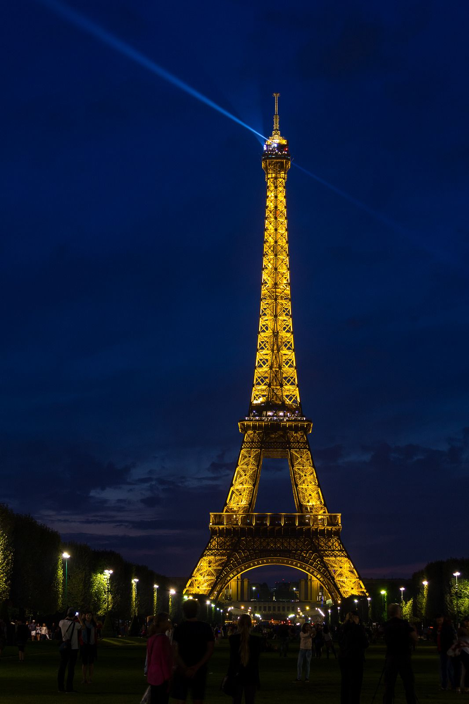
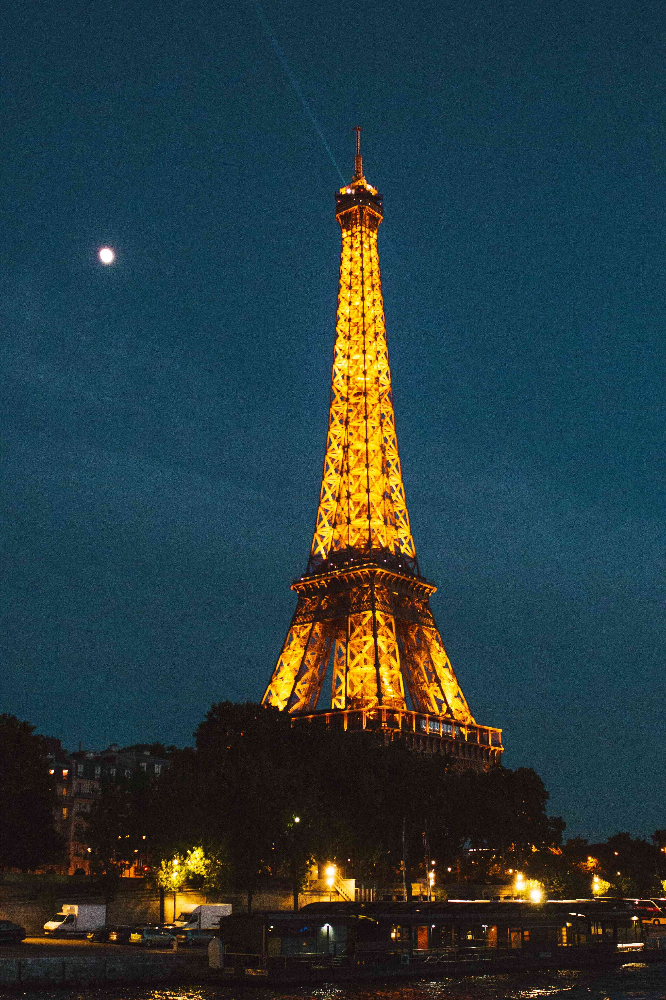

|  | The Eiffel Tower’s IlluminationsEvery evening, the Eiffel Tower is adorned with its golden covering and sparkles for 5 minutes every hour on the hour, while its beacon shines over Paris. • Unveiled on the 31st December 1985, invented by Pierre Bideau, an electrician and lighting engineer, it consists of 336 projectors equipped with high-pressure, yellow-orange sodium lamps. • This form of illumination, which has been met with unanimous, worldwide success, was the starting point of a nocturnal revival of monuments, in Paris as well as in the cities of France and the world. • The beams of light, directed from the bottom towards the top, illuminate the Eiffel Tower from the inside of its structure. Since 1958, by replacing the 1,290 working projectors that illuminated the Tower from the outside, they have been highlighting the fine metallic structure of the monument and illuminating the areas used by late-night visitors until the closing of the Tower to the public. In addition to the aesthetic aspect, it is equally necessary for the security of the late-night operation of the Tower. |
• The projectors are turned on in under 10 minutes. This is activated upon nightfall by the sensors. • In 2004, they were replaced by projectors with an electrical power of 600 watts as opposed to the previous 1KW, i.e. an energy consumption saving of around 40%. Their improved output of light preserves all the beauty of the overall appearance. • Since that time and every four years, a team of SETE technicians has replaced the 336 projector bulbs that wrap the Eiffel Tower in golden light every evening. The last operation took place in spring 2019. • Contrary to popular beliefs, the Tower’s nightly illumination, it’s golden glow, only represents about 4% of the monument’s annual energy expenses. • In December 2019, the four 2000W projectors that had illuminated the antenna since 1985 were replaced by LED versions that are 10 times less powerful and consume 10 times less energy. • In 2020, the 28 projectors that illuminate the steps in the outstretched portions of the four pillars will be replaced to reduce the installed power by 80%. The Beacon and Sparkles for the "Countdown to the Year 2000" |
 |